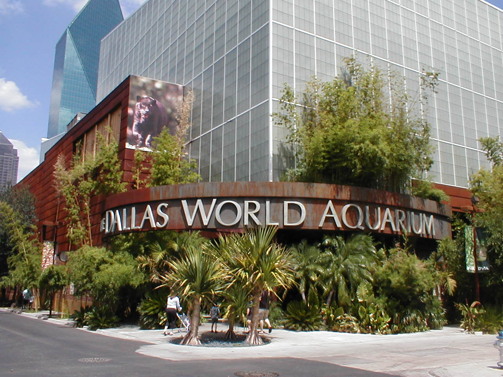

Welcome to non-official Page of Dallas

Dallas History
Dallas vs other Texas Cities
| City |
Population |
City Founded |
City Classification |
Average Income |
Region |
| Austin |
974,478 |
1838 |
Urban |
42,242 |
Central |
| Dallas |
1.3M |
1841 |
Metropolitan |
31,975 |
North |
| Houston |
2.28M |
1837 |
Urban |
30,438 |
Gulf Coast |
Things to do in Dallas:
- Galleria Dallas
- Dallas Museum of Art
- Bush Presidential Library and Museum
- Dallas Aquarium
Outdoor Activities
- The Dallas Arboretum and Botanical Garden
- Dallas Zoo

- Dallas Farmers Market
- Dallas World Aquarium
